For more resources on working with the different MCP writer content types, please check out these articles:
After completing this lesson, you'll be able to:
In this lesson, you will:
For each MCP tool call to an FME Flow MCP server, FME Flow returns the job status, whether the workspace succeeds or fails, back to the MCP client. This is useful for MCP tools that trigger an action such as writing data to a database, updating a file, or sending a notification, since the client only needs to know whether the operation completes. However, many MCP workflows need to return data to the requesting client to leverage MCP and FME workflows fully. The MCP writer communicates information from the FME workspace running as an MCP tool back to the MCP client that made the request.
The MCP writer allows you to send a structured MCP tool response from an FME workspace that an MCP client can consume directly. The MCP writer accumulates all records you route to it in the workspace into a JSON-RPC 2.0-formatted response document, which FME Flow routes to the calling MCP client. The output response conforms to the tool response format and requirements the MCP Tools Specification defines. From the MCP user's or client's perspective, calling an MCP tool and receiving a detailed response appears seamless because FME formats the response as JSON in the background.
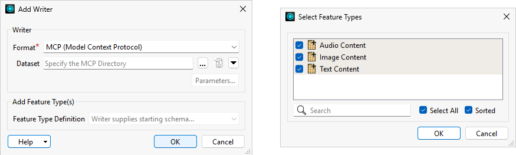
The MCP writer currently supports returning text, image, and audio content as JSON for MCP tools. Each content type appears as a separate feature type in the workspace, and you can include one or more content types in the same workspace depending on what the tool needs to return.
Text is the most common output type and is supported by every MCP client. You pass text content to the writer as a plain string attribute, typically the result of a calculation, a formatted summary, a list of records, or any other text the workspace produces. For data-heavy tools like counting features in an area or summarizing building plans, text is typically the right choice, and you build what you want to send as the MCP response using an AttributeCreator and route it to the writer feature type. For more complex responses, you can format details into a JSON object to pass back to the MCP client.
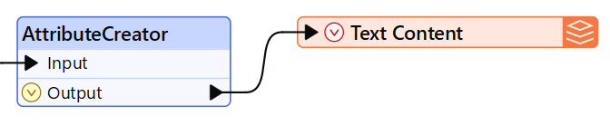
Image content allows a tool to return visual output, such as a generated map, chart, or spatial visualization, directly in the response. You pass image content to the writer as Base64-encoded data along with a MIME type. To retrieve an image to return as an MCP response, use an AttributeFileReader to read the image file as Base64, then an AttributeCreator to add a mimeType attribute (for example, image/png). FME handles the encoding; the client receives the image directly in the response. Note that some MCP clients have file size limits, so you may need to resample or compress large images before writing them.
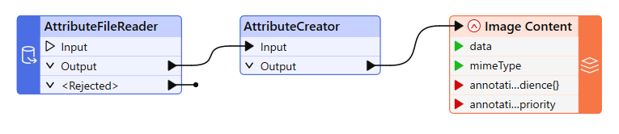
Audio content works similarly to image — you pass it as Base64-encoded data with a MIME type (for example, audio/mpeg). This content type supports use cases where the tool output is an audio file or clip. Support for audio content varies by MCP client, so you should test the audio playback with your target MCP client, likely an AI model, before building a tool that uses audio output.
For more resources on working with the different MCP writer content types, please check out these articles:
When you create an MCP tool on FME Flow using a workspace containing an MCP writer, FME Flow will display the MCP icon  next to the workspace name. It signifies that the workspace has an MCP writer and will return additional information to the MCP client when a client calls the tool.
next to the workspace name. It signifies that the workspace has an MCP writer and will return additional information to the MCP client when a client calls the tool.
Once FME Flow returns the tool result to the MCP client, the AI model interprets it; however, different AI agents may interpret the same result differently. A response that one model renders as a formatted table, another might display as plain text. An image that one client shows inline, another might describe in words.
To help guide the AI toward a correct interpretation, the MCP writer supports optional annotation values, audience, and priority for each content type. The audience and priority values give the MCP client guidance on how to handle the MCP response, including how to display the content and its purpose. Again, whether an AI MCP client honors these values depends on the client itself, and you should test your intended AI client to understand and predict its behavior.
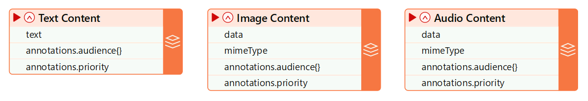
And again, your tool description helps the MCP client understand what to expect from the tool's output, its purpose, and how best to display the information to the user. A tool description that specifies the format and structure of the output gives an AI model the context it needs to handle the response correctly and present it usefully. A vague description leaves interpretation up to each AI model, which can produce inconsistent results across clients, or even across different sessions or requests within the same client.
This exercise continues where the FME as an MCP Server exercise left off. You should complete the previous exercise before continuing with this one.
Frank is creating a workspace for another MCP tool. This time, Frank needs to return some data when the tool is called, not just run the workspace and report completion status, so he will need to add an MCP writer to his workspace. Frank has already begun creating his workspace, which reads neighborhood boundaries for the City of Vancouver and cell signal data points, clips the points to the neighborhoods, and calculates summary statistics on cell signal quality for each neighborhood.
In this exercise, you will:
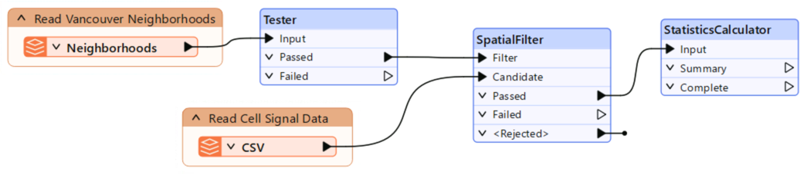
Cell signal quality summary for @Value(NeighborhoodName):
@Value(Power.total_count) measurements found.
Average signal power: @Value(Power.mean) (min:@Value(Power.min), max: @Value(Power.max))
Average signal quality: @Value(Quality.mean) (min: @Value(Quality.min), max: @Value(Quality.max))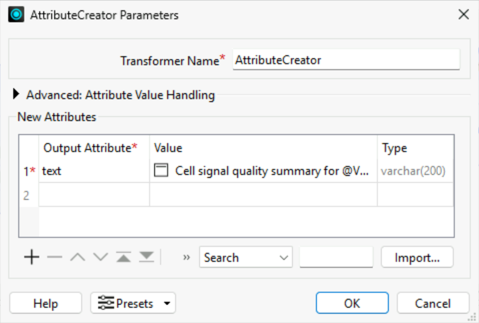
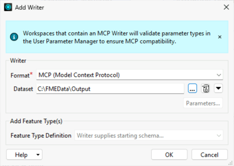
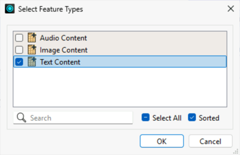
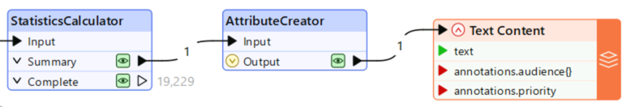
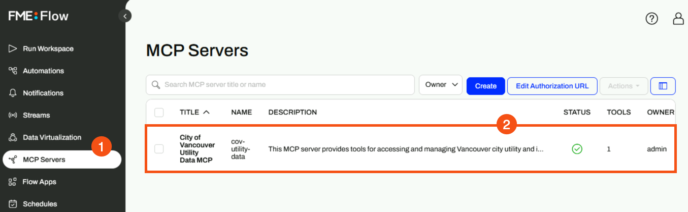
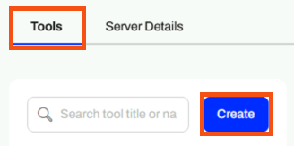
Returns a summary of cell signal quality measurements for a specified Vancouver neighborhood. Use this tool when a field supervisor or planner needs to assess mobile connectivity across an entire neighborhood before dispatching crews. Provides average, minimum, and maximum signal power (dBm) and signal quality, plus total measurement count for the area. Signal power closer to 0 dBm indicates stronger signal; signal quality closer to 0 indicates less interference. Neighborhood names must match Vancouver city records exactly and are case-sensitive. Returns structured JSON with signal statistics.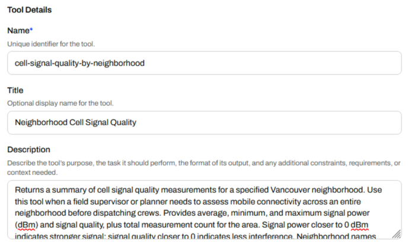
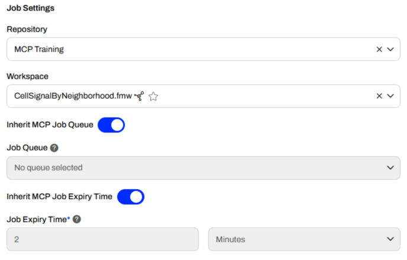
Name of the Vancouver neighborhood to summarize cell signal for. The neighborhood input must match exactly and is case-sensitive. The options for neighborhoods are: 'Downtown', 'Fairview', 'Kitsilano', 'Mount Pleasant', 'West End', 'Strathcona'.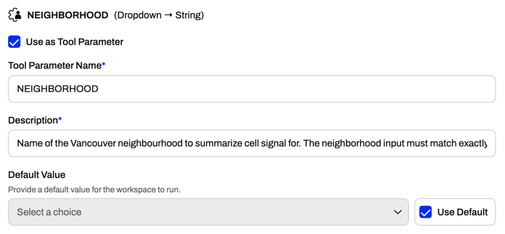
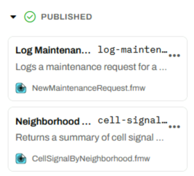
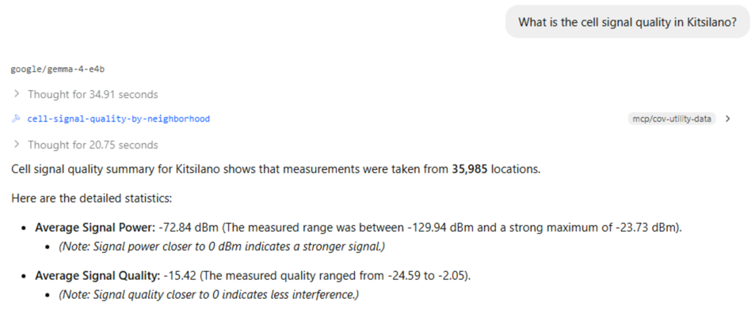
You've now built an MCP tool that returns data or information from the workspace to the MCP tool using the MCP writer. You can control what information is sent back to the MCP client without granting it access to the entire dataset.